The chemical imbalance theory of depression: dead, zombie, or alive?
There is an ongoing and partly very heated debate about the chemical imbalance theory (CI) of depression. Basically it is the theory that depression is the result of a deficit in serotonin or a dysfunction of the serotonergic system. The CI theory sometimes comes along with the assumption that antidepressants (SSRIs, SNRIs) work in correcting the CI. I call this the “pure form” of the CI. Much has been written about the CI theory and I do not want to repeat it here but instead refer to the paper by Joanna Moncrieff and colleagues (Moncrieff et al. 2022) and the controversy around this paper with lengthy letters to the editor and responses, including one where I was involved (Moncrieff et al. 2023). The main purpose of this blog is to show how alive the CI theory of depression really is. Some say that academic psychiatrists never promoted the CI theory and thus it is a straw men, mainly used by antipsychiatrists. Some say the CI theory of depression was only used by the pharmaceutical companies and this was long ago. However, when I did a quick Google-search using “depression” in January 2021 (search results as PDF), I was surprised that the CI was much alive, even in its pure form, and even in the top 10 search results. I posted this on X. In spring 2024, a while after the famous umbrella review, I checked if the information was corrected, but there was not much change at all. I deleted my tweets on X recently and now I want to document the search results here, because I think this is important as evidence against the denial that I come across in discussions (“nobody ever promoted the CI theory”). I leave it up to you to judge if the CI theory of depression is dead, a zombie, or still alive.
#1: Netdoctor
In January 2020 the top hit in the Google search was authored, among others, by a top Austrian academicpsychiatrist from the Medical University of Vienna. The text is not available anymore but I saved it here.
“Was sind die Ursachen einer Depression? Bei einer Depression ist der Stoffwechsel des Gehirns verändert. Die Spiegel der Überträgersubstanzen (Neurotransmitter) Serotonin und Noradrenalin sind bei depressiven Menschen im Vergleich zu Gesunden niedriger.”
“Wie wird eine Depression behandelt? Bei Patienten mit Depression ist meistens das Gleichgewicht an Signalstoffen im Gehirn gestört.”
“Die Neurotransmitter stehen beim gesunden Menschen in einem bestimmten Gleichgewicht zueinander. Bei Depressionen ist diese Balance zwischen den Neurotransmittern gestört, was in Symptomen wie gedrückter Stimmungslage, Antriebslosigkeit und Schlafstörungen seinen Niederschlag findet. Insbesondere kommt es bei depressiven Menschen zu einer verminderten Aktivität jener Nervenzellen, die die Neurotransmitter Serotonin, Noradrenalin und Dopamin übertragen. Durch Medikamente zur Behandlung der Depression (Antidepressiva) wird die Konzentration dieser Neurotransmitter an den Synapsen erhöht. Dieser Vorgang benötigt allerdings etwas Zeit, weshalb das Gleichgewicht zwischen den Überträgersubstanzen erst einige Tage bis Wochen nach Therapiebeginn wiederhergestellt ist – und somit auch die depressiven Symptome abklingen. Um die Neurotransmitter wieder ins Gleichgewicht zu bringen, stehen verschiedene medikamentöse Wirkmechanismen zur Verfügung…”
So we have the CI theory here, saying that neurotransmitters such as serotonin are reduced among depressed. Perhaps it can be interpreted as the pure form of the CI theory, because it is said that it takes days to weeks until antidepressants restore the balance.
The text was updated when I checked today (November 23, 2024). It is said that the text is in accordance with the medical scientific literature, guidelines, and that it was approved by medical professionals.
https://www.netdoktor.de/krankheiten/depression/
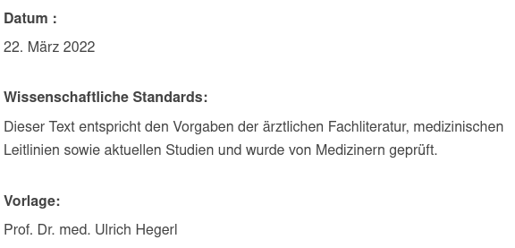
Prof. Hegerl is a leading academic psychiatrist in Germany.
We are now reading that depression is related to a CI of neurotransmitters, including serotonin
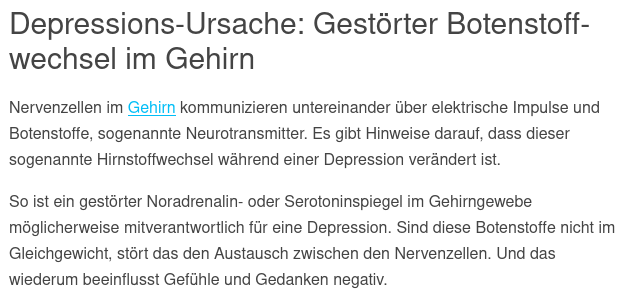
Antidepressant work by increasing the level serotonin, the “happy hormone”
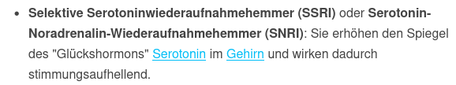
Thus, we have the CI theory, but not in its pure form anymore.
#2 Psychiater im Netz
The second hit was from major psychiatry/psychotherapy organizations in Germany and Switzerland. The text is saved here. It was written with the support of leading academic psychiatrists and editors are professional organizations of psychiatrists and neurologists in Germany
https://www.neurologen-und-psychiater-im-netz.org/psychiatrie-psychosomatik-psychotherapie/stoerungen-erkrankungen/depressionen/
We see the CI theory in its pure form, and the text is unchanged when I checked it today (November 24, 2024).
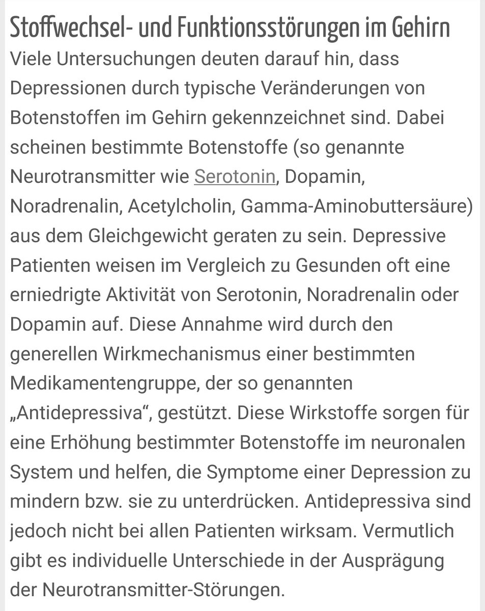
#3 Deutsche Depressionshilfe
The third hit was from a major German organization to defeat depression. Responsible for the content is a leading psychiatry professor. Again the chemical imbalance myth, again a snapshot from 2021 for the record.
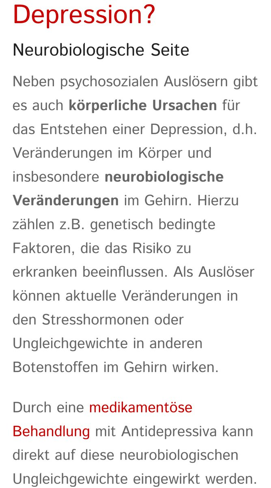
Fortunately, the organization changed the text, explicitly saying that the CI is too simple as an explanation of depression.
https://www.deutsche-depressionshilfe.de/ueber-uns/das-buendnis
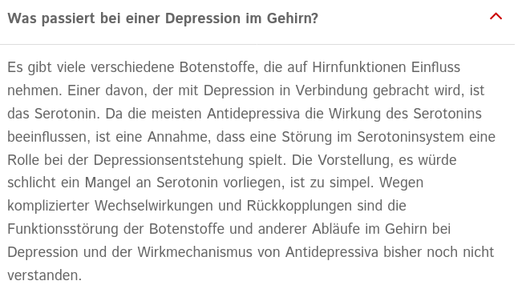
However, it is also said that depression can be caused by a CI
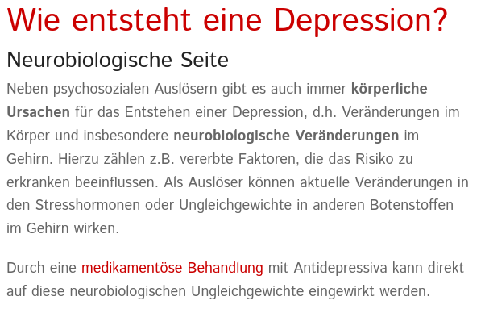
#4 Apotheken-Umschau
The website included a video with a psychiatry professor. A lot was said about lowered serotonin activity, a softened version of the CI theory (Min. 6). Unfortunately, I didn’t save the video. It was also said that antidepressants are safe and effective and do not cause dependency or addiction.
In November 2024, the CI is still present, but somehow weakened
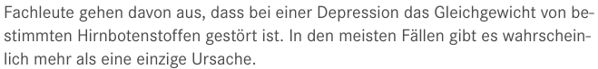
#6 Stiftung Gesundheitswissen
Hit #6 again included the CI theory of depression. Stiftung Gesundheitswissen claims to be independent and evidence based (and is member of the evidence based network)
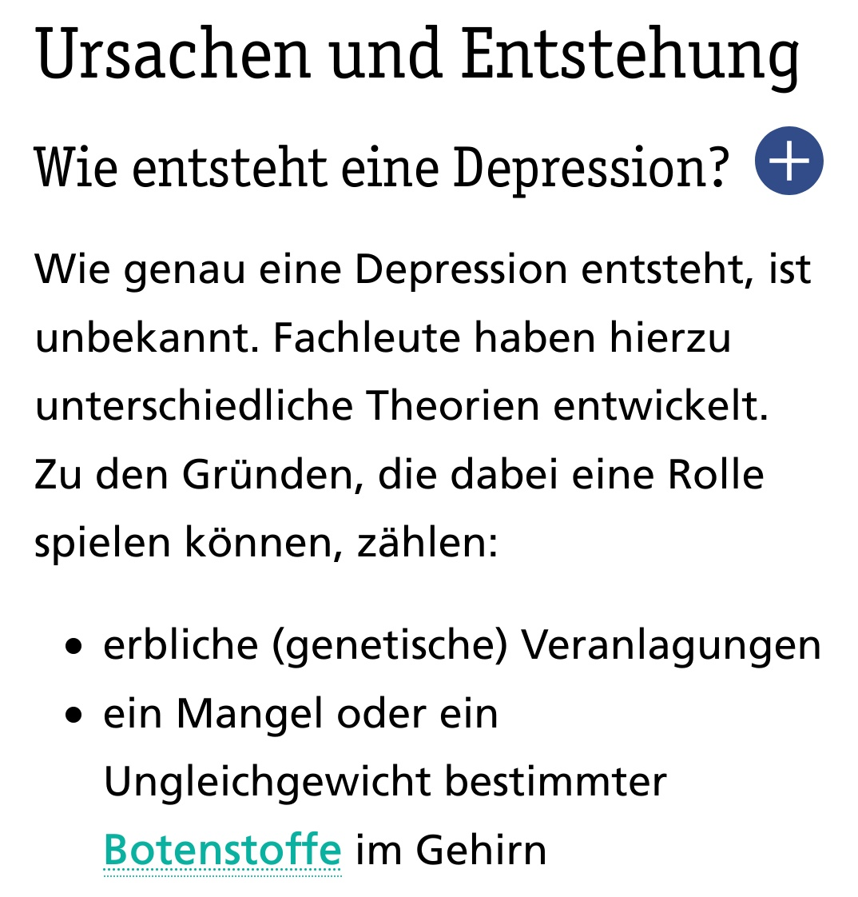
When I accessed the page in November 2024, the information was updated. The CI theory can be found in its pure form, but it is said that the exact mechanism is not known.
https://www.stiftung-gesundheitswissen.de/wissen/depression/behandlung-mit-medikamenten
Findings from other search engines
Some said that my Google search results might have been influenced by my search history. Thus I tried with DuckDuckGo and also using the Tor-Browser, with very similar result.
With DuckDuckGo, the #1 search results was different than in the Google search, leading to a new source with the CI in its pure form, saying that antidepressants restore the imbalance in neurotransmitters. The source is lifeline and it was said that it meets the highest scientific standard.
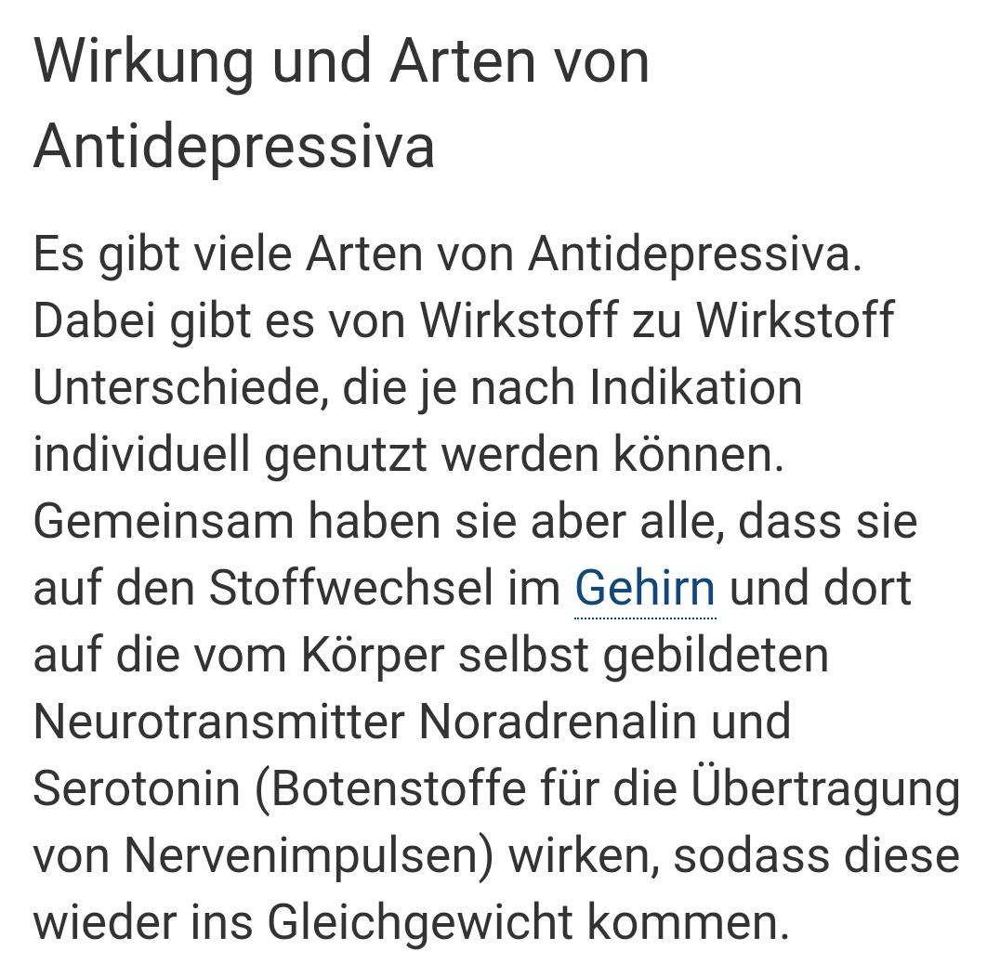
Now, in November 2024, the information is still the same. https://www.lifeline.de/krankheiten/depression/
As a side note, the text says that antidepressants are not causing dependency. Whereas it is true that antidepressants do not cause addiction, it is now more widely acknowledged that dependency is an issue, even in an article in the British Journal of Psychiatry (Massabki and Abi-Jaoude 2020).
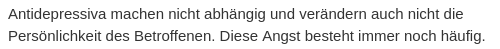
Older searches
I also did a search before 2021, but I don’t know which exact search terms I used, but I selected results from academic psychiatry.
Max Planck Institute für Psychiatrie
Retrieved January 2020 from https://www.psych.mpg.de/840900/depression
The CI can be read in its pure form:
“Bei der Depression ist das biochemische Gleichgewicht der Signalübertragung gestört. Die Therapie zielt darauf ab, durch Medikamente diese Stoffwechselstörung in den Nervenzellen zu korrigieren.”
The website is not available anymore but I saved it here.
LMU Klinikum München
This was retrieved in January 2020 and I saved it here. The CI theory is proposed.
“Depressionen haben selten nur einen Auslöser. In aller Regel entwickelt sich die Erkrankung aufgrund von mehreren Faktoren. Das kann zum einen die genetische Veranlagung sein. Zum anderen spielen aber auch körperliche Ursachen eine Rolle – genauso wie Situationen, die über die eigenen Kräfte gehen oder ein Perfektionismus, durch den man sich selbst permanent überfordert. Mögliche Auslöser sind z. B.: ein gestörter Hirnstoffwechsel, in dem die Hirnbotenstoffe Serotonin und/oder Noradrenalin aus der gesunden Balance geraten sind” http://www.klinikum.uni-muenchen.de/Klinik-und-Poliklinik-fuer-Psychiatrie-und-Psychotherapie/de/patient_besuch/krankheitsbilder/depression/index.html
Universität Göttingen
Also from January 2020, the information in the text (saved here) points unambigously to the CI theory.
„Wie bei jeder Depression weisen Betroffene einen Mangel des Gehirnbotenstoffs Serotonin auf“
http://www.psychiatrie.med.uni-goettingen.de/de/content/patienten/237.html
Now, in November 2024, the information is still there, even in it’s pure form.
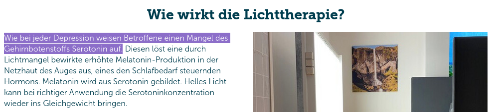
https://psychiatrie.umg.eu/patienten-besucher/therapieangebote/lichttherapie/
University of Bern
Found in January 2020, the CI theory is obvious in this text, saved here:
“Depression ist nicht gleich Depression: Manche entstehen durch einen Mangel am Botenstoff Serotonin im Gehirn, andere durch einen Mangel an Noradrenalin; ebenfalls ein Botenstoff.”
The information is still available here:
https://www.uniaktuell.unibe.ch/2015/die_zwei_arten_depressiv_zu_sein/index_ger.html
Neurologen und Psychiater im Netz
As already mentioned above, this is the information from psychiatric/neurological associations in Germany and Switzerland. Here is their statement from January 2020. The CI-theory is obvious, and the action of antidepressants suggests that the CI-theory in its pure form is implicated.
“Viele Untersuchungen deuten darauf hin, dass Depressionen durch typische Veränderungen von Botenstoffen im Gehirn gekennzeichnet sind. Dabei scheinen bestimmte Botenstoffe (so genannte Neurotransmitter wie Serotonin, Dopamin, Noradrenalin, Acetylcholin, Gamma-Aminobuttersäure) aus dem Gleichgewicht geraten zu sein. Depressive Patienten weisen im Vergleich zu Gesunden oft eine erniedrigte Aktivität von Serotonin, Noradrenalin oder Dopamin auf. Diese Annahme wird durch den generellen Wirkmechanismus einer bestimmten Medikamentengruppe, der so genannten „Antidepressiva“, gestützt. Diese Wirkstoffe sorgen für eine Erhöhung bestimmter Botenstoffe im neuronalen System und helfen, die Symptome einer Depression zu mindern bzw. sie zu unterdrücken.”
The information can be found in a slightly modified form in November 2024. The pure form of the CI-theory is obvious.
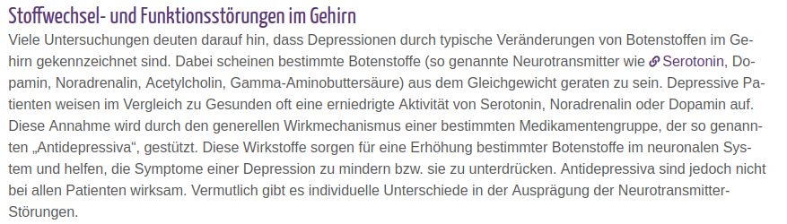
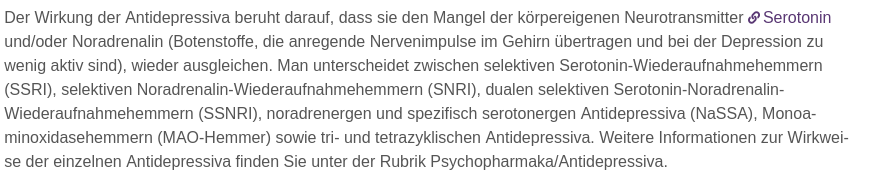